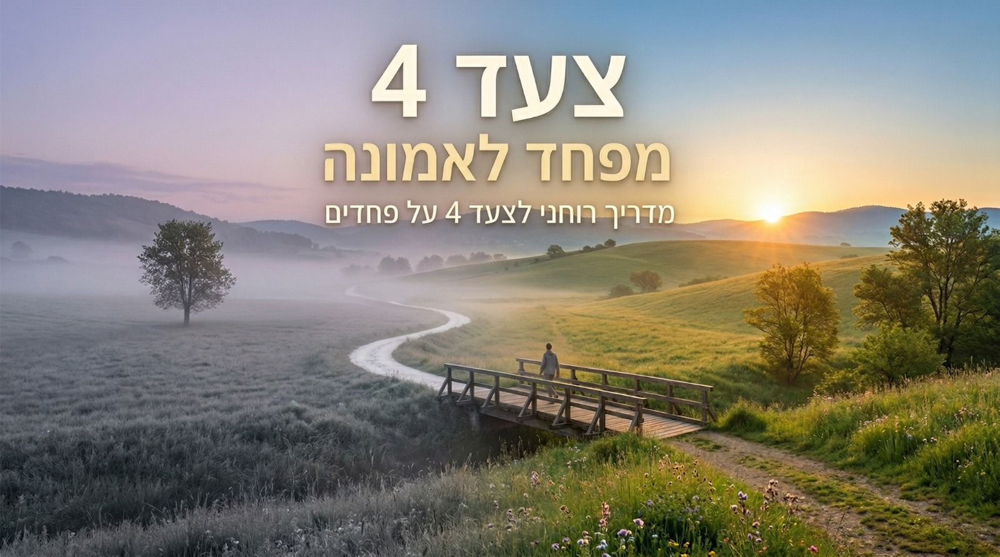

הבוט ילווה אתכם בסבלנות דרך שאלות חשבון הנפש על הפחד (ממה אני מפחד? האם ההישענות על עצמי הכשילה אותי? איך זה היה נראה אם הייתי סומך עליו? וכו'). כדי לא להציף, הבוט ישאל שאלה אחת בכל פעם וימתין שתסיימו לענות במלוא הכנות לפני שיתקדם לשאלה הבאה.
פשוט נכנסים לקישור של הבוט למטה וכותבים לו את המשפט הבא: "היי, אני רוצה להתחיל לעבוד על הצעד הרביעי."